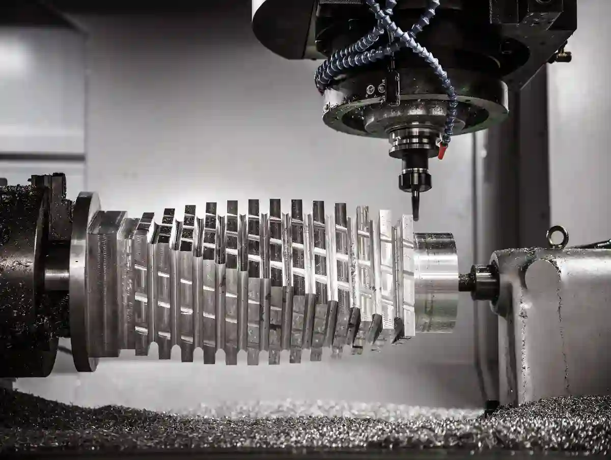
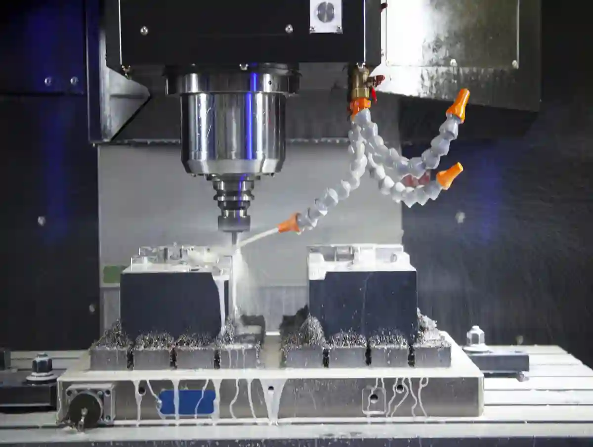
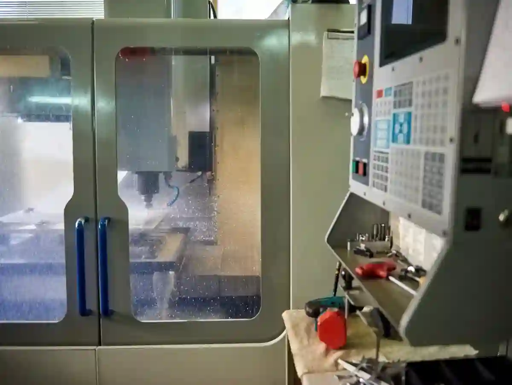
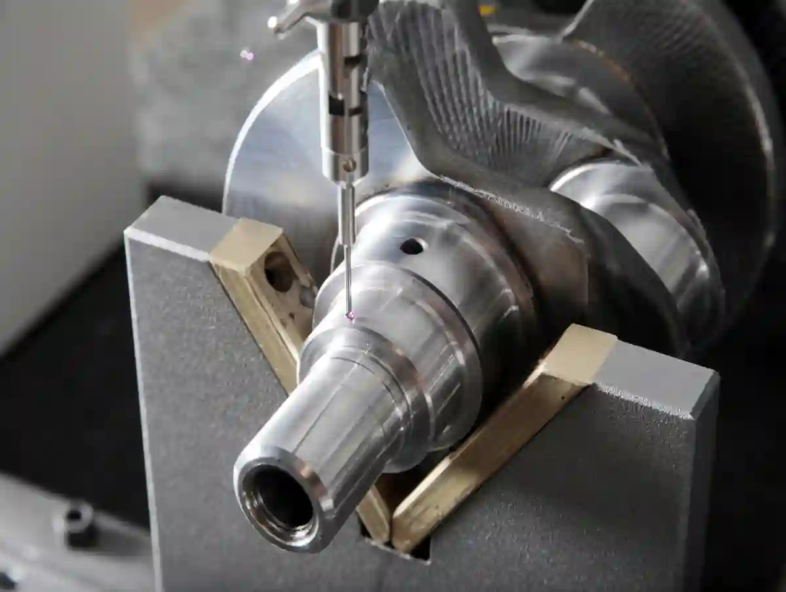

CNC Frezeleme Özel Parça ile Karmaşık Geometrili Özel Parçalar
Karmaşık geometrili bir parçayı üretmek; sadece “işlemek” değil, aynı anda geometriyi korumak, toleransı tutmak, yüzeyi stabil bırakmak ve bunu tekrarlanabilir hale getirmektir. Bu yüzden cnc frezeleme özel parça üretimi, klasik seri üretimden farklı bir mühendislik disiplinine ihtiyaç duyar: doğru referanslandırma (datum), doğru bağlama (fikstür), doğru takım yolu (CAM), doğru ölçüm planı ve proses boyunca kontrol.
Bu yazıda, cnc frezeleme özel parça yaklaşımını “karmaşık geometri” odağında ele alacağız. Özellikle karmaşık parça frezeleme süreçlerinde sık yaşanan; köşe hatası, titreşim (chatter), takım uzaması, yüzey dalgalanması, ısıl deformasyon ve ölçü kayması gibi sorunların kök nedenlerini ve çözüm yollarını pratik bir dille anlatacağım.
Aymaksan tarafında bu tip işlerde temel yaklaşımımız şudur: parçayı tek seferde kahramanca bitirmeye çalışmak yerine, prosesin riskli noktalarını önceden bölmek, kritik yüzeyleri doğru sırayla işlemek ve ölçü kontrolünü “sonunda bakarız” değil “prosesin parçası” olarak kurgulamak. Böylece cnc frezeleme özel parça üretiminde süre uzamadan kalite yükselir.
İçerik boyunca ihtiyaç duyacağınız üst kategoriye hızlı erişim: Özel Parça İmalatı Blog.
Karmaşık Geometriyi “Zor” Yapan Şey Nedir?
Bir parçayı “karmaşık” yapan şey, yalnızca formunun kıvrımlı olması değildir; asıl zorluk, üretim sırasında formun aynı kalması için gereken proses disiplinidir. Çok sayıda yüzeyin birbirine referans verdiği tasarımlarda, küçük bir bağlama hatası bile zincirleme sapma üretir. Ayrıca takım erişimi daraldıkça rijitlik düşer, yüzey kalitesi dalgalanır ve kontrol ihtiyacı artar. Bu noktada karmaşık parça frezeleme yaklaşımı; riskli bölgeleri önceden tanımlayıp operasyonları bölerek ölçü ve yüzeyi güvenceye alır.
Karmaşıklık çoğu zaman “şekil çok kıvrımlı” demek değildir. Üretimde karmaşıklığı artıran 4 ana faktör vardır:

Erişilebilirlik ve Alt Kesitler
Takımın parçaya ulaşamadığı bölgeler, uzun takım kullanmaya zorlar. Uzun takım; rijitlik kaybı, titreşim ve yüzey bozulması demektir. Bu senaryoda çok eksenli cnc üretim ciddi avantaj sağlar; çünkü parça/tabla açılandırılarak takım boyu kısaltılabilir.
Datum ve Referans Kaybı
Parçada datum yüzeyler doğru tanımlanmadıysa, ikinci bağlamada milimetrenin yüzde biri seviyesinde kaymalar birikir. Bu nedenle cnc frezeleme özel parça işlerinde, ilk operasyonların amacı “malzeme kaldırmak” değil “referans üretmek” olmalıdır.
Malzeme Davranışı ve İç Gerilim
Alüminyum, paslanmaz, ıslah çeliği, döküm… Her malzeme talaş kaldırırken farklı gerilim boşaltır. Yanlış sıra ile işlenen yüzeyler parçayı “muz” gibi eğebilir. Bu problem hassas freze imalat hedefleyen herkesin günlük gerçeğidir.
Tolerans-Yüzey-Zaman Üçgeni
Dar tolerans istiyorsunuz, yüksek yüzey kalitesi istiyorsunuz, hızlı olsun istiyorsunuz. Üçü birden mümkün ama bunun yolu “doğru strateji”dir: kaba talaş, yarı finiş, finiş, ölçüm, düzeltme.
Tasarımdan Üretime Geçişte İlk Kontrol: DFM ve Kritik Ölçüler
Üretime geçişte en büyük kayıp, “tasarım doğruysa üretim de kolaydır” varsayımıdır. Oysa talaş kaldırma; kesme kuvveti, titreşim, ısıl genleşme ve bağlama deformasyonu gibi etkilerle tasarımın niyetini zorlayabilir. DFM kontrolü; hangi ölçülerin fonksiyonel olarak kritik olduğunu, hangi yüzeylerin tek bağlamada işlenmesi gerektiğini ve nerede tolerans gevşetmenin mümkün olduğunu netleştirir. Özellikle cnc frezeleme özel parça üretiminde DFM, süreyi kısaltan değil; hatayı baştan önleyen “mühendislik filtresi”dir.
CNC frezeleme özel parça üretimi çoğu zaman bir CAD dosyasıyla başlar; fakat CAD “tasarımın doğrusu”, üretim ise “imalatın doğrusu”dur. İkisi her zaman aynı değildir.
DFM İncelemesi ile Risk Haritası Çıkarma
DFM’de şu sorulara net cevap ararız:
- Bu köşe radyüsü takım bulmayı zorlaştırıyor mu?
- İnce duvarlar titreşime açık mı?
- Alt kesit var mı; varsa operasyon sayısı artacak mı?
- Ölçü toleransları fonksiyonel mi, yoksa alışkanlıkla mı sıkı yazıldı?
Bu aşamada “tolerans gevşetme” konuşulabiliyorsa, üretim maliyeti dramatik düşer. Eğer toleranslar gerçekten gerekli ise, proses planı buna göre kurulmalıdır.
Ölçüleri “Kritik / Kritik Değil” Diye Sınıflandırma
Her ölçü kritik değildir. Kritik ölçüler genellikle:
- Montaj yüzeyleri
- Rulman yatakları
- Sızdırmazlık yüzeyleri
- Kalıp eşleşme yüzeyleri (özellikle özel kalıp parçası üretimi)
Kritik ölçüleri sınıflandırmak, ölçüm planını da sadeleştirir: her şeyi ölçmek yerine doğru şeyleri doğru zamanda ölçersiniz.
Ölçüm altyapısı ve izlenebilirlik yaklaşımı için (kurumsal referans): TÜBİTAK UME (Ulusal Metroloji Enstitüsü) bağlantısını “ölçüm izlenebilirliği” bağlamında referans alabilirsiniz.
Operasyon Planı: Karmaşık Parça Frezelemede “Sıra” Her Şeydir
Operasyon sırası, parçanın geometrisini “koruyan iskelet” gibidir. Kaba talaşı yanlış yerde erken almak; ince duvarların serbest kalmasına, gerilimin aniden boşalmasına ve sonrasında finişte ölçü kovalamaya neden olur. Doğru sırada ise önce sağlam datum yüzeyleri üretilir, sonra yük dengeli dağıtılarak talaş kaldırılır ve kritik bölgeler kontrollü şekilde finişe bırakılır. Bu disiplin, özellikle tek bağlamada bitmeyen işlerde, ikinci bağlamanın riskini azaltır ve çok eksenli cnc üretim ihtiyacını doğru noktada devreye sokar.
Karmaşık bir parçada en sık görülen hata şudur: “Önce şu cepleri boşaltayım, sonra dış formu dönerim.” Bu yaklaşım, özellikle ince duvarlı parçalarda deformasyonu büyütür.
1) Datum Üretimi (Referans Operasyonu)
İlk operasyonun amacı; parçayı sonraki bağlamalarda tekrar tekrar aynı konuma getirecek güvenilir yüzeyleri oluşturmaktır. Bu aşamada yüzey kalitesi “son ürün” seviyesinde olmak zorunda değildir; ama düzlemsellik ve paralellik kontrol edilmelidir.
2) Kaba Talaş (Stabil Kaldırma)
Kaba talaşta hedef; ısıl yükü dağıtmak ve takım ömrünü korumaktır. Trokoidal takım yolu, özellikle karmaşık parça frezeleme senaryolarında hem titreşimi azaltır hem de talaş tahliyesini kolaylaştırır.
3) Yarı Finiş (Ölçüye Yaklaşma)
Yarı finiş; finiş operasyonunu “sürprizsiz” hale getirir. Parça burada ölçülür, sapma varsa telafi planlanır. CNC frezeleme özel parça işinde yarı finişi atlamak, finalde saatler kaybettirir.
4) Finiş (Kritik Yüzeyler)
Finişte amaç; toleransı tutmak, yüzey pürüzlülüğünü stabilize etmek ve çapak riskini kontrol etmektir. Burada hassas freze imalat için uygun takım seçimi ve doğru kesme parametreleri belirleyicidir.
Takım Seçimi ve Takım Yolu: Karmaşık Geometriyi Yönetmenin “Gizli” Tarafı
Karmaşık geometride “doğru takım” tek başına yetmez; takımın nasıl yüklendiği, yükün süreç boyunca sabit kalıp kalmadığı ve talaşın nasıl tahliye edildiği belirleyicidir. Adaptif/trokoidal stratejiler kaba talaşta yükü stabilize ederken, finiş stratejileri yüzeyi dalgasız bırakmayı hedefler. Takım boyu uzadığında, küçük bir parametre hatası bile titreşimi büyütür. Bu nedenle CAM ekranında, özellikle iç ceplerde ve dar köşelerde cep açma frezeleme için ayrı takım yolu kurgulamak; hem ölçüyü hem yüzeyi daha öngörülebilir yapar.
Karmaşık geometride başarı çoğu zaman CAM ekranında kazanılır. Aynı geometriyi iki farklı takım ve iki farklı takım yolu ile işlerseniz, sonuçlar bambaşka olur. CNC frezeleme özel parça üretiminde bu fark; bazen 0,02 mm ölçü sapması, bazen de yüzeyde dalga olarak çıkar.

Takım Geometrisi: Helis, Kaplama, Köşe Radyüsü
- Yüksek helis açısı; alüminyumda talaş tahliyesini iyileştirir.
- Kaplamalı takımlar; çelikte ısıyı yönetir.
- Köşe radyüslü takımlar; köşe kırılmalarını ve mikro çatlakları azaltır (özellikle finişte).
Bu seçimler özellikle karmaşık parça frezeleme işlerinde “takım kırılmadan” işi bitirmenin anahtarıdır.
Takım Boyu ve Rijitlik: Uzatma = Risk
Uzun takım kullanmak zorundaysanız, parametreleri aynı bırakamazsınız. Devir-ilerleme düşürülür, talaş yükü yeniden hesaplanır. Eğer iş parçası açılandırılabiliyorsa, çok eksenli cnc üretim ile takım boyu kısaltmak çoğu zaman en doğru çözümdür.
CAM Stratejileri: Trokoidal, Adaptif, Kontur
Kaba talaşta adaptif/trokoidal stratejiler; yükü sabit tutar. Bu da titreşimi düşürür. Finişte ise kontur/parallel stratejiler yüzeyi “temiz” bırakır. cnc frezeleme özel parça prosesinde kaba talaş stratejisi hatalıysa, finiş ne kadar iyi olursa olsun yüzey altında gerilim kalabilir.
CAM stratejilerine genel referans (üretici dokümantasyonu): Autodesk Fusion blog (CAM yaklaşımları).
Cep Açma Frezeleme: En Sık Hata Yapılan Operasyon
Cep açma frezeleme basit görünür: “Cebi boşalt.” Oysa cep; titreşimin, çapak riskinin ve ölçü kaçmasının en sık çıktığı yerdir.
Talaş Sıkışması ve Isı Birikimi
Derin ceplerde talaş tahliyesi zayıflarsa, takım ısınır, kesme kuvveti artar, yüzey bozulur. Çözüm; doğru talaş kırma, uygun soğutma ve takım yolu optimizasyonudur.
Köşe Radyüsü Yönetimi
Cepteki keskin köşe talebi, küçük çaplı takım demektir. Küçük takım = düşük rijitlik. Burada tasarımla konuşulabiliyorsa, köşe radyüsünü büyütmek çoğu zaman en ekonomik iyileştirmedir. Konuşulamıyorsa; yarı finiş + finiş sıralaması ve doğru step-over ile sorun yönetilir.
Cepte Tolerans Tutma
Cep toleransı kritik ise, kaba talaş sonrası ölçüye yaklaşmak için yarı finiş şarttır. Finalde tek paso ile “ölçü yakalama” yaklaşımı, hassas freze imalat hedefinde risklidir.
3 Eksen mi 5 Eksen mi? Doğru Eksen Kararı Nasıl Verilir?
Çok eksenli cnc üretim her zaman “daha iyi” değildir; doğru işte daha iyidir.
5 Ekseni Gerektiren Tipik Durumlar
- Alt kesitler ve ters açı yüzeyler
- Tek bağlamada bitmesi gereken kritik datum’lar
- Uzun takımın kaçınılmaz olduğu derin cepler
- Yüksek yüzey kalitesi istenen serbest formlar
3 Eksenin Avantajlı Olduğu Durumlar
- Basit erişim, düşük fikstür ihtiyacı
- Daha hızlı programlama ve daha düşük operasyon riski
- Tekrarlı üretimlerde proses stabilitesi
Aymaksan’da bu kararı verirken parça geometrisini, toleransı ve teslim süresini birlikte değerlendiriyoruz. Özellikle cnc frezeleme özel parça işlerinde yanlış eksen kararı, en pahalı hatadır: baştan ucuz görünür, sonda pahalıya çıkar.
Fikstür ve Bağlama: Ölçüyü Tutan Asıl Kahraman
Bağlama tasarımı, kaliteyi “tesadüften prosese” taşır. Çünkü parça, kesme kuvvetini her operasyon boyunca aynı şekilde karşılamaz; bazı bölgeler elastik davranır, bazı bölgeler gerilim boşaltır. Yanlış temas noktaları parçayı ezer, doğru temas noktaları ise ölçüyü taşır. Referans pimleri, stop yüzeyleri ve tekrarlanabilir konumlandırma; ikinci bağlamada datum kaçmasını minimize eder. Özellikle eşleşen yüzeylerin kritik olduğu projelerde özel kalıp parçası üretimi için fikstür; sadece tutma aparatı değil, toleransın garantisidir.
Karmaşık geometrili parçada ölçüyü çoğu zaman “tezgâh” değil, bağlama tutar. En iyi CAM programı bile kötü fikstürle doğru sonuç vermez. CNC frezeleme özel parça yaklaşımında fikstür; üretimin altyapısıdır.

Bağlama Kuvveti ve Deformasyon Dengesi
Aşırı sıkmak parçayı ezer; az sıkmak parçayı yürütür. İnce duvarlı parçalarda sıkma izleri, finişte ölçü kaçmasına sebep olur. Çözüm; temas yüzeylerini büyütmek, yumuşak çene/ara parça kullanmak ve sıkma kuvvetini kontrollü dağıtmaktır.
Referans Pimleri ve Tekrarlanabilirlik
İkinci bağlamada parçanın 0,05 mm kaçması, bazen tüm işi çöpe atar. Bu yüzden referans pimleri/stop yüzeyleri “kolaylık” değil, zorunluluktur. Karmaşık parça frezeleme senaryolarında tekrarlanabilirlik, kalite kadar süreyi de kurtarır.
Vakum, Manyetik, Özel Aparat
Her parça için şart değil; ama bazı geometrilerde oyunun kurallarını değiştirir. Özellikle yüzeyin geniş, parçanın ince olduğu işlerde vakum bağlama; deformasyonu azaltabilir.
Tolerans ve Yüzey Kalitesi: Hassas Freze İmalat Nasıl Stabil Kurulur?
Hassas freze imalat sadece mikrometreyle ölçmek değildir. Yüzeyin davranışı da tolerans kadar kritiktir. Örneğin pürüzlülük kötü ise, montajda sürtünme artar; ölçü doğru olsa bile parça “çalışmaz”.
Ölçü Sapmasının 3 Kaynağı
- Takım aşınması
- Isıl genleşme (takım + parça)
- Bağlama kaynaklı elastik deformasyon
Bu üçü aynı anda yönetilmezse, cnc frezeleme özel parça üretiminde “bugün tuttu, yarın tutmadı” problemi yaşarsınız.
Son Paso Mantığı: Tek Hamlede Mucize Yok
Final paso; önceki operasyonların kalitesinin sonucudur. Son paso öncesi yarı finişte stabil stok bırakmak (ör. 0,2–0,3 mm gibi parçaya göre) finişi güvenli kılar.
Çapak Yönetimi ve Kenar Kırma
Karmaşık ceplerin kenarlarında çapak, montajı sabote eder. Bu yüzden çapak kırma; süreç sonunda “elde” değil, program içinde planlanmalıdır. Özellikle cep açma frezeleme sonrası kenar kırma, parça fonksiyonunu korur.
Özel Kalıp Parçası Üretimi: Neden Daha Farklı Bir Disiplindir?
Özel kalıp parçası üretimi söz konusu olduğunda, yüzey eşleşmesi ve ölçü tekrarlanabilirliği daha kritik hale gelir. Kalıp parçasında küçük bir sapma, seri üretimde binlerce hataya dönüşebilir.
Eşleşen Yüzeylerin Aynı Bağlamada İşlenmesi
Mümkünse eşleşen yüzeyler tek bağlamada bitirilmelidir. Bu, datum hatasını minimize eder ve montaj uyumunu artırır. Burada çok eksenli cnc üretim devreye girer.
Isıl İşlem ve Son İşleme Payı
Isıl işlem sonrası deformasyon bekleniyorsa, son işleme payı ve final operasyon sırası buna göre planlanır. Kalıp parçalarında “malzeme seçimi” kadar “işleme sırası” da kritik parametredir.
Ölçüm ve Kalite Kontrol: Proses İçi Kontrol Olmadan Stabil Sonuç Yok
CNC frezeleme özel parça üretiminde kalite kontrol, en sonda yapılan bir “onay” değil; üretimin içinde akan bir kontrol mekanizmasıdır.

Proses İçi Ölçüm Noktaları
Kritik ölçüler için iki aşamalı kontrol verimli olur:
- Yarı finiş sonrası kontrol (sapma yakalama)
- Finiş sonrası kontrol (final doğrulama)
Bu yöntem, hurdayı azaltır ve teslim süresini öngörülebilir hale getirir.
Ölçüm Aletinin Doğru Seçimi
- Mikrometre: çap/kalınlık
- Komparatör: runout/düzlemsellik trendi
- CMM: karmaşık geometriler ve GD&T doğrulaması
Karmaşık ölçülerde CMM ile datum bazlı raporlama, hassas freze imalat hedefinde güvenilirlik sağlar.
Süreçte Sık Görülen 7 Hata ve Pratik Çözümü
1) Titreşim (Chatter)
Çözüm: Takım boyunu kısalt, kesme parametresini yeniden hesapla, uygun takım yolu kullan. Gerekirse çok eksenli cnc üretim ile erişimi düzelt.
2) Köşe Ölçüsü Kaçması
Çözüm: Köşe stratejisi (slowdown), uygun radyüs, finişte sabit yük.
3) Cep Tabanında Dalga
Çözüm: Cep açma frezeleme sırasında step-over/step-down optimizasyonu, finiş paso düzeni.
4) İnce Duvar Deformasyonu
Çözüm: Operasyon sırası + bağlama kuvveti + stok bırakma yönetimi.
5) Çapak ve Kenar Yırtılması
Çözüm: Takım keskinliği, kesme yönü, kenar kırma operasyonu.
6) Ölçü “Sıcak” Tutuyor, Soğuyunca Kaçıyor
Çözüm: Ölçüm zamanlaması, soğutma stratejisi, tezgah ısıl stabilizasyonu.
7) İkinci Bağlamada Datum Kayması
Çözüm: Referans pimleri, stop yüzeyleri, fikstür tekrarlanabilirliği.
- Karmaşık geometriye girmeden önce temel çerçeve için: CNC Frezeleme Teknolojileri ve Uygulama Alanları.
- Eksen mantığı ve tezgah yaklaşımı için: CNC Frezeleme ve Dik İşleme.
- Hangi yöntemi ne zaman seçmeli perspektifi için: Özel CNC Parça Üretimi Nedir? Hangi Yöntem Ne Zaman Kullanılır?.
Aymaksan’da Karmaşık Özel Parça Üretim Akışı Nasıl Kurgulanır?
CNC frezeleme özel parça işlerinde hedefimiz iki şeyi aynı anda sağlamak: kaliteyi standardize etmek ve teslim süresini öngörülebilir kılmak. Bunun için akışı net kurarız:

1) Teknik İnceleme ve DFM
Kritik ölçüler, datum yapısı, erişim riskleri ve malzeme davranışı değerlendirilir. Bu aşamada karmaşık parça frezeleme için operasyon sayısı ve bağlama konsepti çıkar.
2) CAM ve Operasyon Simülasyonu
Kaba talaş–yarı finiş–finiş stratejisi belirlenir. Cep bölgelerinde cep açma frezeleme takım yolları ayrıca test edilir. Amaç; kırılma ve çarpışma riskini üretim öncesi sıfıra indirmek.
3) Fikstürleme ve Pilot Üretim
Tekrarlanabilir bağlama çözümü kurulur. Pilot parçada proses içi ölçüm planı uygulanır; gerekirse telafiler standarda bağlanır.
4) Seri / Tekil Üretim ve Raporlama
Parça tipine göre ölçüm raporu formatı belirlenir. özel kalıp parçası üretimi gibi işlerde raporlama daha detaylı kurgulanır.
Aymaksan; torna ve dik işleme merkezleriyle, fikstürleme + CAM odaklı proses yaklaşımıyla, Ar-Ge prototiplerinden özel kalıp parçalarına kadar “az adet / yüksek hassasiyet” işlerine uygun bir üretim düzeninde çalışır. CNC frezeleme özel parça projelerinde kritik başarı kriteri olarak “tek bağlamada doğrulama + proses içi ölçüm” yaklaşımını uygular.
Sık Sorulan Sorular
Karmaşık parça frezeleme için çizimde ne olmalı?
En azından datum yüzeyleri, GD&T notları (varsa), yüzey pürüzlülüğü hedefi ve malzeme/ısıl işlem bilgisi olmalı. Bu bilgiler yoksa cnc frezeleme özel parça planı gereksiz risk alır.
Çok eksenli CNC üretim süreyi uzatır mı?
Her zaman değil. Doğru parçada çok eksenli cnc üretim tek bağlamada bitirme sağladığı için toplam süreyi kısaltabilir; ayrıca ölçü kaçma riskini düşürür.
Cep açma frezeleme sonrası çapak neden kalır?
Talaş tahliyesi, kesme yönü ve finiş paso düzeni çapak oluşturur. Çapak kırma operasyonu planlanmazsa, sonradan elle müdahale süreyi uzatır.
Sonuç: Karmaşık Geometriyi Yönetmek, Proses Yönetmektir
Karmaşık geometri; doğru stratejiyle yönetildiğinde “zor” olmaktan çıkar, sadece “disiplinli” olur. CNC frezeleme özel parça üretiminde başarının formülü şudur: doğru datum, doğru bağlama, doğru takım yolu, doğru ölçüm planı. Bu dört ayak bir araya geldiğinde; karmaşık parça frezeleme, cep açma frezeleme ve hassas freze imalat hedefleri aynı anda tutarlı hale gelir. Özellikle özel kalıp parçası üretimi gibi toleransın kritik olduğu işlerde bu yaklaşım, kaliteyi şansa bırakmaz.